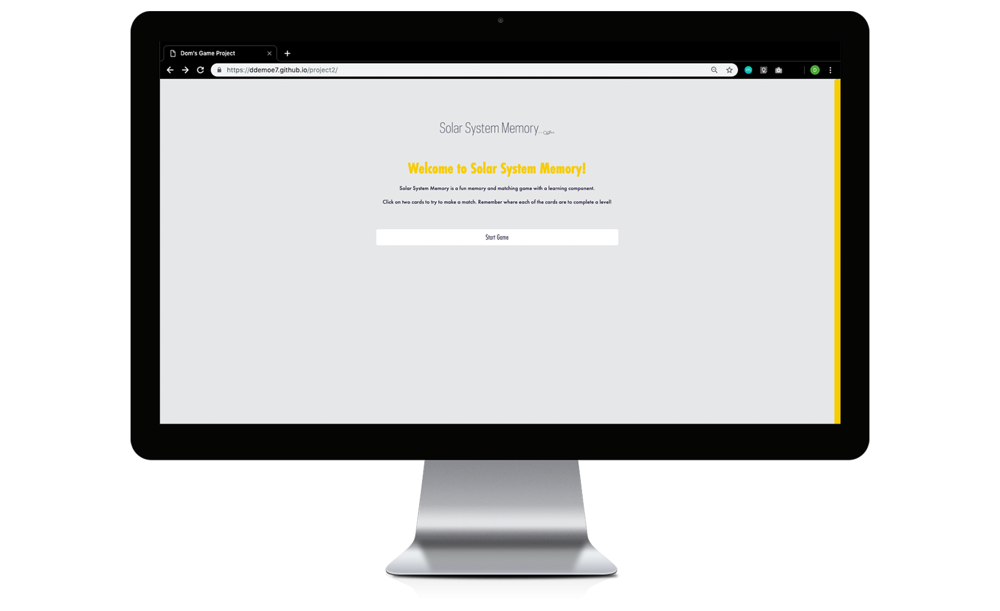

Learning Tool/Game Design
Solar System Memory
To learn and experiment with a multi-page or multi-section interactive website that utilizes touch (and clicks) as user interaction methods.
Tools
Adobe Brackets, Adobe XD, Photoshop, Illustrator
“What would tactile learning tools look like in a digital environment?”
Problem
The world is becoming increasingly more digital. How can we keep up with technology and keep children engaged in the classroom?
Solution
Create an online memory/matching game for children to learn more about the Solar System. During the game, players have the option to click the "learn more" button which will take them to a new page with information about different aspects of the Solar System.